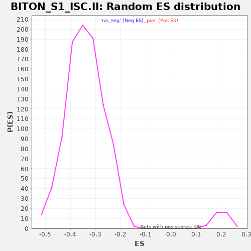

| | | Dataset | al5_v_al2 |
| Phenotype | NoPhenotypeAvailable |
| Upregulated in class | na_neg |
| GeneSet | BITON_S1_ISC.II |
| Enrichment Score (ES) | -0.78779805 |
| Normalized Enrichment Score (NES) | -2.3143346 |
| Nominal p-value | 0.0 |
| FDR q-value | 0.0 |
| FWER p-Value | 0.0 |
Table: GSEA Results Summary
 Fig 1: Enrichment plot: BITON_S1_ISC.II
Fig 1: Enrichment plot: BITON_S1_ISC.II
Profile of the Running ES Score & Positions of GeneSet Members on the Rank Ordered List
| PROBE | GENE SYMBOL | GENE_TITLE | RANK IN GENE LIST | RANK METRIC SCORE | RUNNING ES | CORE ENRICHMENT | | 1 | Zcchc7 | | | 279 | 0.117 | -0.0456 | No |
| 2 | Noxa1 | | | 310 | 0.110 | -0.0433 | No |
| 3 | Rps21 | | | 428 | 0.090 | -0.0594 | No |
| 4 | Ankrd10 | | | 727 | 0.058 | -0.1131 | No |
| 5 | Arglu1 | | | 861 | 0.048 | -0.1355 | No |
| 6 | Rps12 | | | 1013 | 0.038 | -0.1621 | No |
| 7 | Car12 | | | 1577 | 0.007 | -0.2711 | No |
| 8 | 6030458C11Rik | | | 1780 | -0.004 | -0.3101 | No |
| 9 | Relb | | | 2175 | -0.020 | -0.3853 | No |
| 10 | Clec2d | | | 2248 | -0.024 | -0.3976 | No |
| 11 | Zfp106 | | | 2440 | -0.032 | -0.4324 | No |
| 12 | Rps27 | | | 2578 | -0.038 | -0.4562 | No |
| 13 | Myc | | | 2638 | -0.041 | -0.4646 | No |
| 14 | Nfic | | | 2645 | -0.041 | -0.4628 | No |
| 15 | Pdrg1 | | | 2940 | -0.055 | -0.5159 | No |
| 16 | Shmt1 | | | 3105 | -0.063 | -0.5432 | No |
| 17 | Dctd | | | 3335 | -0.073 | -0.5823 | No |
| 18 | Urod | | | 3580 | -0.086 | -0.6234 | No |
| 19 | Nfkbia | | | 3974 | -0.113 | -0.6916 | No |
| 20 | Clca4b | | | 4060 | -0.120 | -0.6992 | No |
| 21 | Paics | | | 4085 | -0.121 | -0.6949 | No |
| 22 | Tomm7 | | | 4194 | -0.130 | -0.7064 | No |
| 23 | Gstm1 | | | 4230 | -0.133 | -0.7034 | No |
| 24 | Rpl35 | | | 4546 | -0.174 | -0.7518 | No |
| 25 | Cd320 | | | 4732 | -0.208 | -0.7724 | Yes |
| 26 | Rps18 | | | 4754 | -0.214 | -0.7606 | Yes |
| 27 | Rpl36a | | | 4763 | -0.215 | -0.7462 | Yes |
| 28 | Rps25 | | | 4843 | -0.238 | -0.7440 | Yes |
| 29 | Rps23 | | | 4882 | -0.249 | -0.7330 | Yes |
| 30 | Rpl26 | | | 4885 | -0.249 | -0.7150 | Yes |
| 31 | Rpl32 | | | 4891 | -0.251 | -0.6974 | Yes |
| 32 | H2-Ab1 | | | 4899 | -0.254 | -0.6800 | Yes |
| 33 | Rpl18a | | | 4911 | -0.257 | -0.6631 | Yes |
| 34 | Rps26 | | | 4925 | -0.261 | -0.6463 | Yes |
| 35 | Rps17 | | | 4930 | -0.262 | -0.6277 | Yes |
| 36 | Rpl11 | | | 4970 | -0.276 | -0.6148 | Yes |
| 37 | Rps24 | | | 5012 | -0.292 | -0.6013 | Yes |
| 38 | Rpl38 | | | 5028 | -0.299 | -0.5821 | Yes |
| 39 | Rps13 | | | 5037 | -0.302 | -0.5613 | Yes |
| 40 | H2-Eb1 | | | 5039 | -0.303 | -0.5391 | Yes |
| 41 | Rps14 | | | 5056 | -0.314 | -0.5190 | Yes |
| 42 | Rpl23a | | | 5061 | -0.318 | -0.4962 | Yes |
| 43 | Rpl36 | | | 5062 | -0.318 | -0.4726 | Yes |
| 44 | Rps15a | | | 5071 | -0.324 | -0.4502 | Yes |
| 45 | Rpl37a | | | 5078 | -0.329 | -0.4271 | Yes |
| 46 | Ifitm2 | | | 5080 | -0.330 | -0.4029 | Yes |
| 47 | Rpl35a | | | 5093 | -0.338 | -0.3802 | Yes |
| 48 | Rps19 | | | 5097 | -0.339 | -0.3557 | Yes |
| 49 | Rps28 | | | 5102 | -0.341 | -0.3313 | Yes |
| 50 | Rps10 | | | 5105 | -0.343 | -0.3063 | Yes |
| 51 | Rpl37 | | | 5112 | -0.351 | -0.2815 | Yes |
| 52 | Rpl31 | | | 5114 | -0.351 | -0.2557 | Yes |
| 53 | Rangrf | | | 5116 | -0.352 | -0.2299 | Yes |
| 54 | Rplp1 | | | 5133 | -0.374 | -0.2053 | Yes |
| 55 | Rpl39 | | | 5137 | -0.376 | -0.1781 | Yes |
| 56 | Ndufa7 | | | 5138 | -0.379 | -0.1500 | Yes |
| 57 | Ifitm3 | | | 5148 | -0.392 | -0.1228 | Yes |
| 58 | Rps16 | | | 5153 | -0.399 | -0.0941 | Yes |
| 59 | Rps29 | | | 5154 | -0.400 | -0.0645 | Yes |
| 60 | Cd74 | | | 5183 | -0.491 | -0.0336 | Yes |
| 61 | Cyba | | | 5185 | -0.493 | 0.0027 | Yes |
Table: GSEA details [plain text format]

Fig 2: BITON_S1_ISC.II: Random ES distribution
Gene set null distribution of ES for BITON_S1_ISC.II